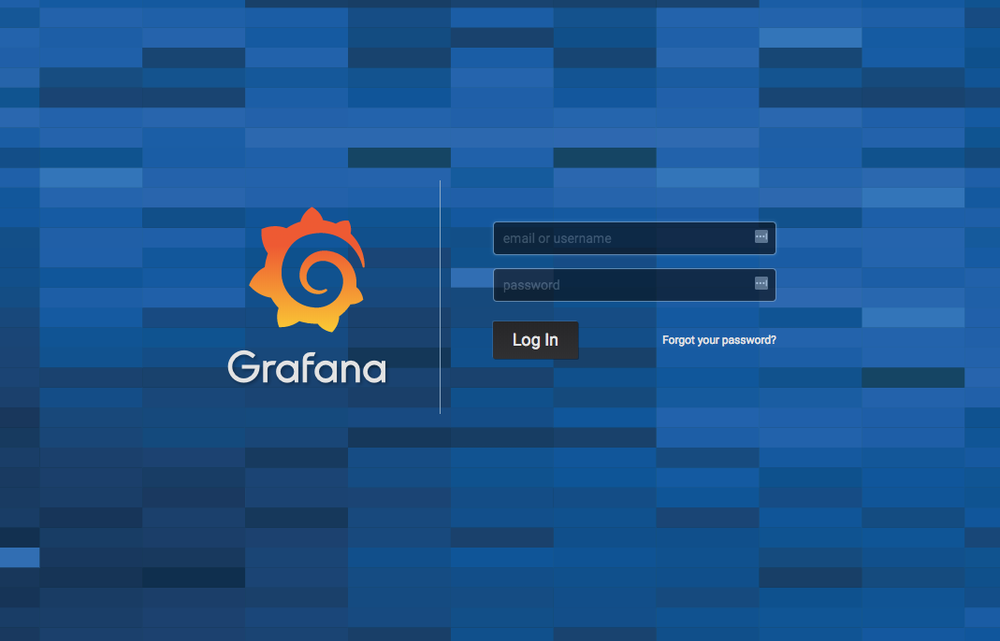
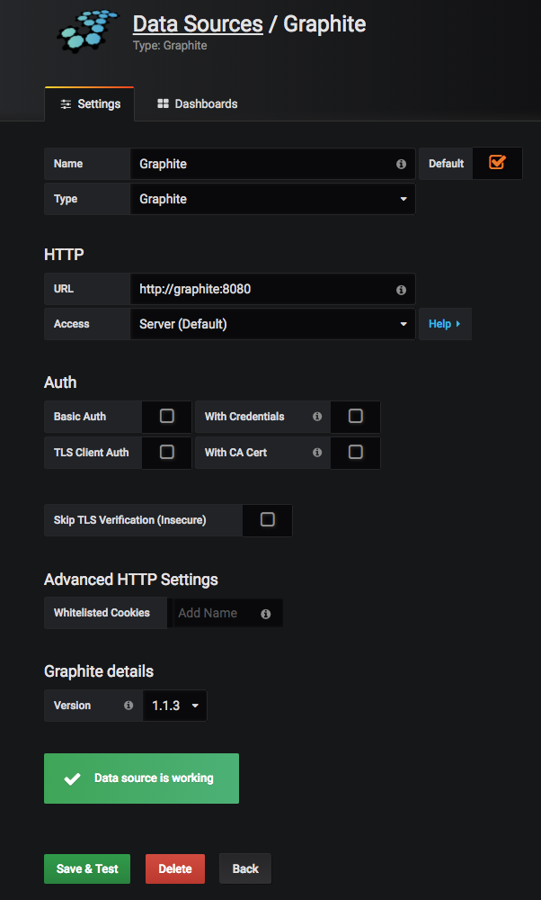
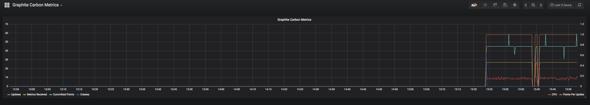
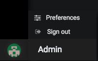

Monitor Your System with Graphite and a Grafana Dashboard
Updated by Linode Written by Jared Kobos
What are Graphite and Grafana?
Graphite is an open source monitoring tool for storing and viewing time series data. It does not collect data by itself, but has a simple interface and integrates easily with third-party tools. Grafana allows you to connect to a Graphite installation (or other data source) and build dashboards to view and analyze the data.
This guide uses Docker Compose to run the official Grafana and Graphite containers and connect them to a user-defined network. This makes it easy to securely connect a Grafana dashboard to the Graphite database.
Installation
You will need both Docker and Docker Compose to complete this guide.
Install Docker
These steps install Docker Community Edition (CE) using the official Ubuntu repositories. To install on another distribution, see the official installation page.
Remove any older installations of Docker that may be on your system:
sudo apt remove docker docker-engine docker.ioMake sure you have the necessary packages to allow the use of Docker’s repository:
sudo apt install apt-transport-https ca-certificates curl software-properties-commonAdd Docker’s GPG key:
curl -fsSL https://download.docker.com/linux/ubuntu/gpg | sudo apt-key add -Verify the fingerprint of the GPG key:
sudo apt-key fingerprint 0EBFCD88You should see output similar to the following:
pub 4096R/0EBFCD88 2017-02-22 Key fingerprint = 9DC8 5822 9FC7 DD38 854A E2D8 8D81 803C 0EBF CD88 uid Docker Release (CE deb)Add the
stableDocker repository:sudo add-apt-repository "deb [arch=amd64] https://download.docker.com/linux/ubuntu $(lsb_release -cs) stable"Update your package index and install Docker CE:
sudo apt update sudo apt install docker-ceAdd your limited Linux user account to the
dockergroup:sudo usermod -aG docker $USERNote
After entering theusermodcommand, you will need to close your SSH session and open a new one for this change to take effect.Check that the installation was successful by running the built-in “Hello World” program:
docker run hello-world
Install Docker Compose
Download the latest version of Docker Compose. Check the releases page and replace
1.21.2in the command below with the version tagged as Latest release:sudo curl -L https://github.com/docker/compose/releases/download/1.21.2/docker-compose-`uname -s`-`uname -m` -o /usr/local/bin/docker-composeSet file permissions:
sudo chmod +x /usr/local/bin/docker-compose
Docker Compose Configuration
Create a directory:
mkdir ~/grafana && cd ~/grafanaIn a text editor, create
docker-compose.ymland add the following content:- docker-compose.yml
-
1 2 3 4 5 6 7 8 9 10 11 12 13 14 15 16 17 18 19 20 21 22 23 24 25 26version: "3" services: grafana: image: grafana/grafana container_name: grafana restart: always ports: - 3000:3000 networks: - grafana-net volumes: - grafana-volume graphite: image: graphiteapp/graphite-statsd container_name: graphite restart: always networks: - grafana-net networks: grafana-net: volumes: grafana-volume: external: true
This Compose file uses the official Docker images for both Graphite and Grafana. It also specifies a network to connect the containers.
Since the data volume is external, you will need to create it manually:
docker volume create --name=grafana-volumeBring up the configuration:
docker-compose up -dCheck that both containers started successfully:
docker psCONTAINER ID IMAGE COMMAND CREATED STATUS PORTS NAMES 494e45f7ab56 grafana/grafana "/run.sh" 19 seconds ago Up 7 seconds 0.0.0.0:3000->3000/tcp grafana 49881363d811 graphiteapp/graphite-statsd "/sbin/my_init" 19 seconds ago Up 7 seconds 80/tcp, 2003-2004/tcp, 2023-2024/tcp, 8080/tcp, 8125-8126/tcp, 8125/udp graphite
Add a Data Source and Create a Grafana Dashboard
In a browser, navigate to port
3000on your Linode’s FQDN or public IP address (e.g.192.0.2.0:3000). You should see the Grafana login page:
Log in using the default admin account (username and password are both
admin).Click Create data source in the main dashboard and fill in the form as follows:

- Name:
Graphite - Type:
Graphite - URL:
http://graphite:8080 - Access:
Server (Default) - Version: Select the newest available.
1.1.3in this example.
Click Save & Test.
- Name:
Click New dashboard to create and customize a new panel:

To import a sample Dashboard, try the Internal Grafana Stats.
- Click New dashboard at the top, then Import dashboard.
- Type
55into the Grafana.com Dashboard box, and click Load. - Select Graphite in the data source dropdown, and click Import.
Click the floppy disk icon or press CTRL+S to save.
Click Add users to access the user management configuration tab.
Hover over the user icon in the lower left corner of the sidebar and click Preferences to open a menu where you can replace the default admin username and password with something more secure:

Next Steps
Graphite does not collect data by itself. See the Graphite documentation for a list of third party tools to add data for visualization. In addition, a larger, distributed deployment of Graphite may not be suitable for the containerized approach taken in this guide. If this is your use case, see the documentation for instructions on how to install Graphite from scratch.
More Information
You may wish to consult the following resources for additional information on this topic. While these are provided in the hope that they will be useful, please note that we cannot vouch for the accuracy or timeliness of externally hosted materials.
Join our Community
Find answers, ask questions, and help others.
This guide is published under a CC BY-ND 4.0 license.